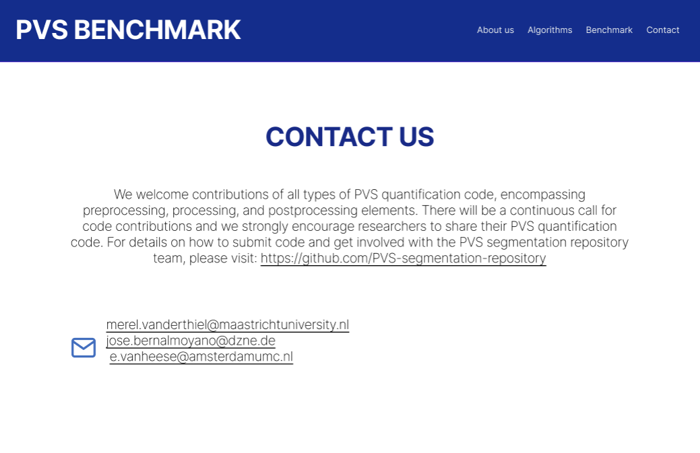
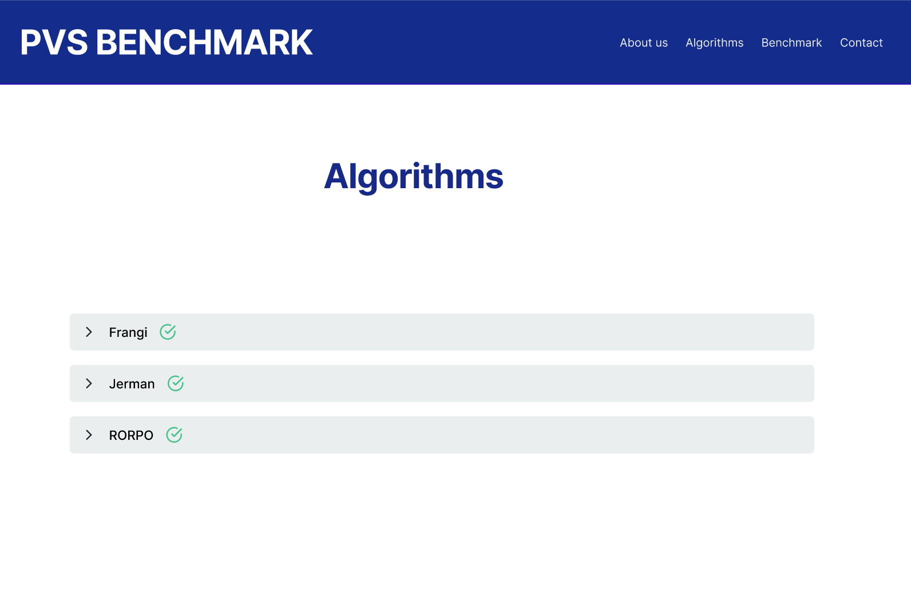
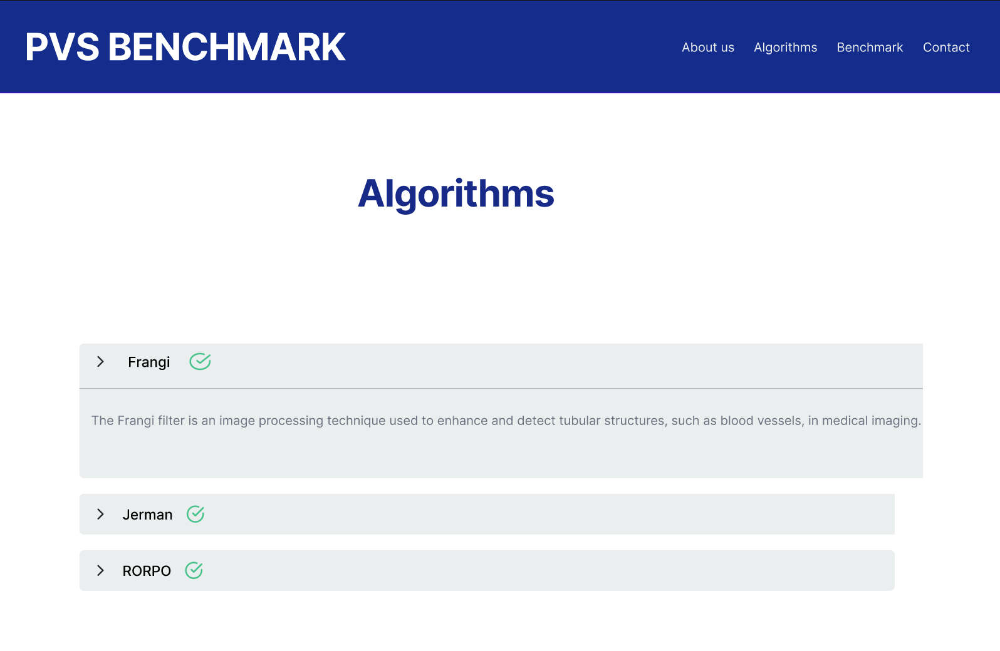
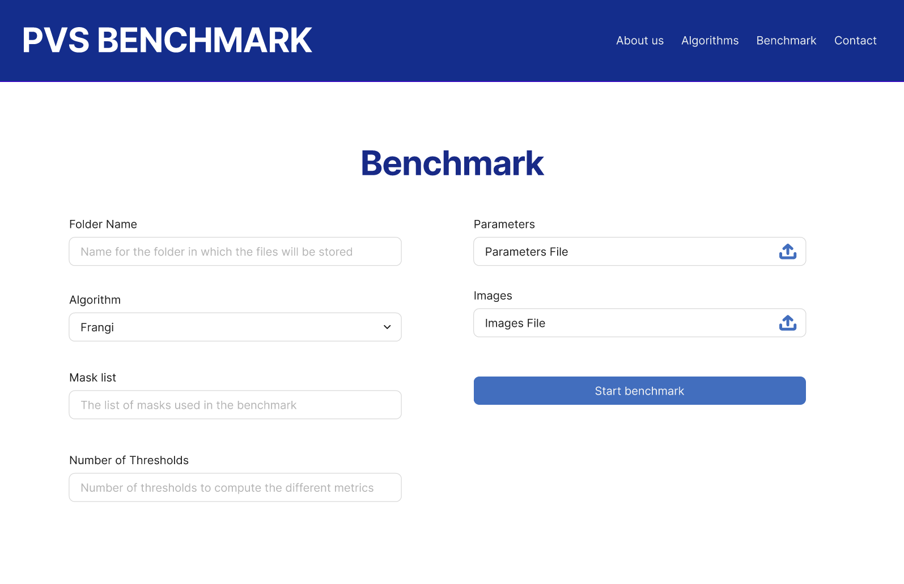
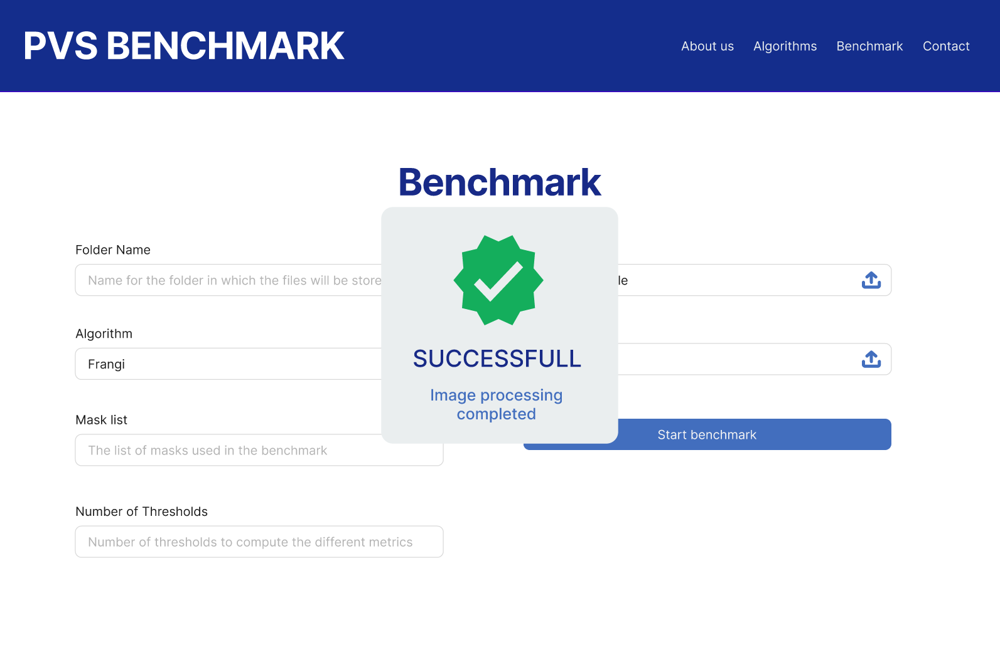

PVS BENCHMARK
User manual of an open-source PVS segmentation benchmark
Introduction
- Author : Maria Camila Jaramillo, Valery Molina Burgos
- Mail: maria.jaramillo.andrade@correounivalle.edu.co , valery.molina@correounivalle.edu.co
Welcome to the PVS Benchmark platform! This guide will walk you through how to use the platform effectively for conducting your tests and research investigations. Here, you’ll find all the information you need to get started, from setting up to running your tests and interpreting the results.
Getting Started
Follow the steps below to get started with downloading the necessary Docker image, setting up the container, and running the benchmarking and filtering processes.
Step 1: Pull the Docker Image
First, download the Docker image from the repository by running the following command:
docker pull camijaramillo/benchmark_pvs:ThresholdsStep 2: Run the Docker Container
Next, start the Docker container, mounting your local folder to share files between your computer and Docker. Use this command:
docker run --rm -v "filelocation:/mnt/data" camijaramillo/benchmark_pvs:Thresholds /bin/bashExplanation:
--rm: Automatically removes the container after it stops.-v "filelocation:/mnt/data": Mounts your local directory (C:\Users\filelocation) to the/mnt/datadirectory inside the container, enabling access to files.
About us and Contact us
About us
To learn more about the PVS Benchmark repository project, click on the "About Us" section, located in the main menu at the top. In this section, you will find detailed information about the program's purpose, the context of the PVS segmentation project, and key details regarding our Git repository and the available code collection.

"About Us" section option in the principal view

"About Us" view
Contact us
You can access the "Contact Us" and "About Us" sections through the top menu. In the "Contact Us" section, you can join the project by visiting our GitHub repository link and using the provided contact email to reach out if you wish to contribute your own segmentation algorithm for PVS.
"Contact Us" view
Viewing Available Algorithms
To explore all the available algorithms in the PVS Benchmark, click on the "Algorithms" section, located in the main menu at the top. In this section, you will find a comprehensive list of all algorithms currently included in the benchmark, along with detailed descriptions. Each algorithm entry provides an overview of its purpose, application, and key features, offering valuable insights to assist researchers and developers in understanding and utilizing these tools effectively within their projects.
"Algorithms" section option in the principal view
"Algorithms" view
Algorithm information view
Use the benchmark
To run tests using the PVS Benchmark, click on the "Benchmark" section, located in the main menu at the top. In this section, you can utilize the application to perform tests with the various available algorithms. This functionality allows users to evaluate algorithm performance and compare results. The benchmarking process aims to provide a practical and interactive environment for researchers and developers to test, analyze, and optimize PVS segmentation tools effectively.
"Benchmark" section option in the principal view
Main Benchmark View: Here, you will find various parameters that need to be filled in for using the benchmark.
Benchmark Configuration
Folder Name
This parameter specifies the name that will be assigned to the folder containing the generated results. This allows users to easily organize and access output data, ensuring that results from different benchmark tests are stored and identified clearly.
Algorithm
This parameter refers to the algorithm that will be evaluated using the benchmark. This section includes a dropdown menu displaying the currently available algorithms for testing, allowing users to select the one they wish to assess and compare.
Mask List
The "Mask List" parameter specifies the masks that will be used during testing. By default, the "organ" mask must always be included. If more than one mask is required, they should be separated by commas, as illustrated in the example image. This section also provides the option to add the "BG" mask for the basal ganglia, the "CSO" mask for the centrum semiovale, or both, depending on the testing needs.
Number Thresholds
Thisparameter specifies how many thresholds will be used to calculate different metrics. Each metric compares a binary volume to the ground truth, with the binary volume created by thresholding the vesselness result. Since the results are normalized between 0 and 1, setting Number of Thresholds = 5 would generate thresholds at 0, 0.25, 0.5, 0.75, and 1.
{kind=link}
Parameters
The parameter file, a .json file, defines settings for each vesselness filter, including the filter name, output file name, and executable parameters. It may specify filters like "Frangi" or "Jerman," with outputs such as "frangi.nii" and "jerman.nii," and parameters like sigmaMin and sigmaMax. The file supports multiple filters and parameter instances, offering flexibility for testing. Simple naming works for evaluating methods, while descriptive names (e.g., "0.1-0.5.nii") are useful for benchmarking parameter effects, such as alpha and beta in Frangi's filter.
Images
The images file must be a .txt file containing an input volume, multiple masks, and a ground truth. Supported formats include .mhd, .nii, and DICOM, with input volumes in double (other formats) or int_16 (DICOM), and masks/ground truth in uint_8. Other formats may need C++ template modifications. The file should list volumes in order: unique ID, raw data path, vessels ground truth path, organ mask path, Basal Ganglia (BG) mask path, and Center Semiovale (CSO) mask path. The unique ID creates a folder for vesselness results. Ensure the mask count/order matches the settings file and avoid extra end-of-line characters to prevent errors.
Messages
When you start the benchmark, the processing of images will begin. The duration will vary based on your computer's resources. During the process, you will see messages indicating the progress and outcome of each step.
How the messages in the benchmark will show
In progress
This message appears when the benchmark process has started, and the system is actively processing the images. It informs the user that their input is being handled, though the final outcome is not yet available. Additionally, it displays the number of images processed so far and the remaining count.
Error
This message appears when the benchmark fails to complete due to an error. It provides feedback on what went wrong and, where possible, suggests steps for resolution.
Succesfull
This message appears when the benchmark has been completed successfully. It reassures the user that all the images has been processed.